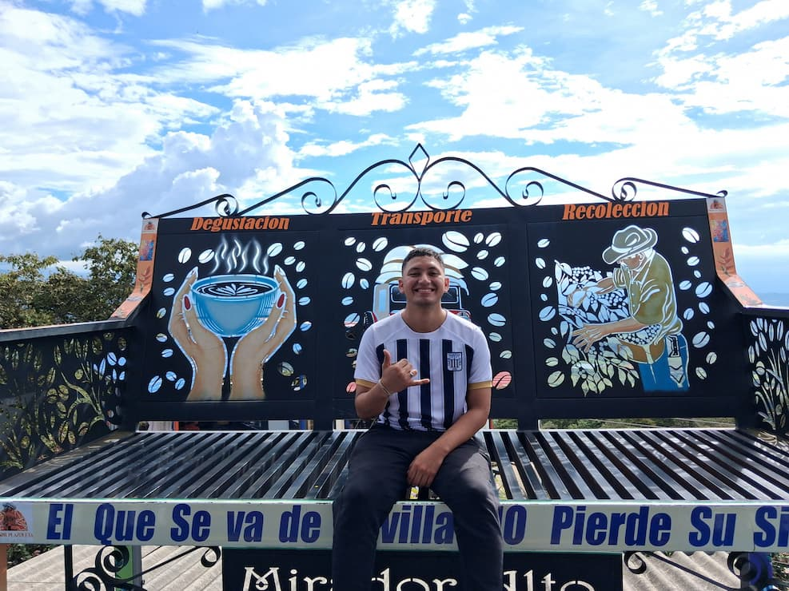

Mauricio Galindo Zuñiga | WDD 130

Hello! My name is Mauricio Galindo and I am from Cali, Colombia. / I enjoy play sports specially the soccer. I served a mission in Lima, Peru. The mission was an opportunity to strengthen my faith, serve others, and develop new skills. It is an important experience in my personal history./ I am studying at BYU-Pathway Worldwide. I am interested in acquiring skills that will help me build a professional future. I realliy Love de Peruvian and Colombian food. I like dancing Cali-style salsa and climbiing mountains.